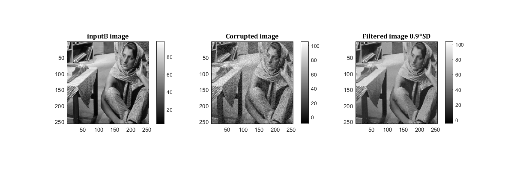
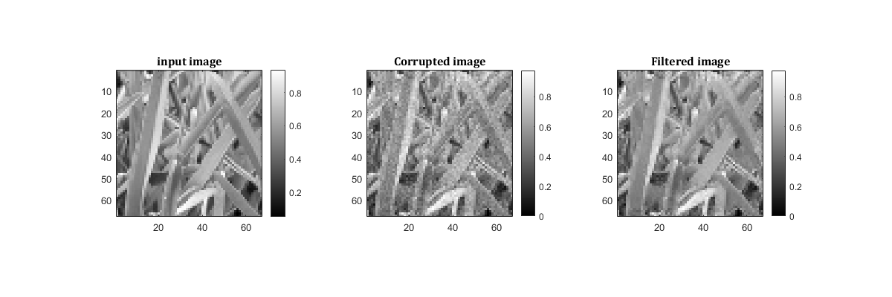
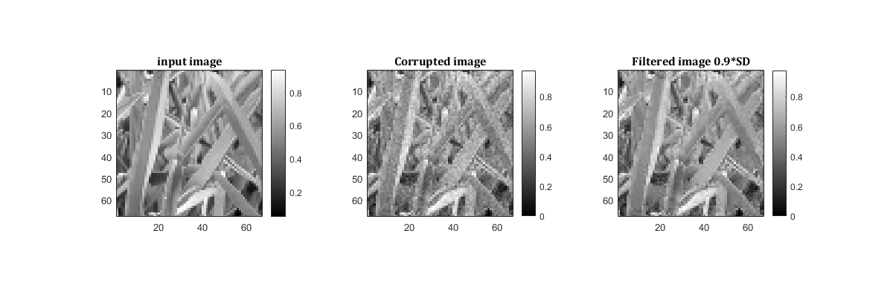
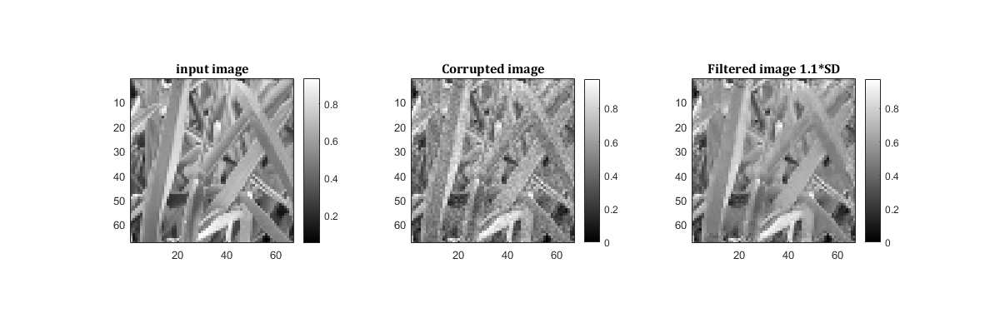
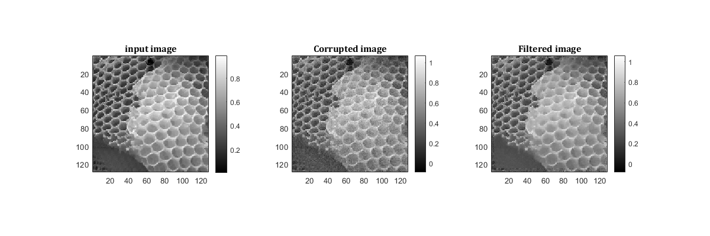

MyMainScript
Contents
- Image 1: Barbara
- Corrupting image with noise
- Optimal parameter values:
- Note:
- Patch-based filtering with sub-optimal parameters
- 0.9 SD
- 1.1 SD
- Image 2: Grass Noisy
- Patch-based filtering with optimal parameters
- Optimal parameter values:
- Note:
- Patch-based filtering with sub-optimal parameters
- 0.9 SD
- 1.1 SD
- Image 3: Honey Comb
- Corrupting image with noise
- Patch-based filtering with optimal parameters
- Optimal parameter values:
- Note:
- Patch-based filtering with sub-optimal parameters
- 0.9 SD
- 1.1 SD
Image 1: Barbara
% Reading inputB inputB = load('../data/barbara.mat'); inputB = double(inputB.imageOrig); G = fspecial('gaussian', [9,9], 0.66); inputB = imfilter(inputB,G,'same');
Corrupting image with noise
[xb,yb] = size(inputB); sd_b = 0.05*(max(max(inputB)) - min(min(inputB))); corrupted_B = inputB + sd_b*randn(xb,yb); corrupted_B_shrunk = corrupted_B(1:2:end,1:2:end); inputB_s = inputB(1:2:end, 1:2:end); % Patch-based filtering with optimal parameters tic; h_b = 1.25; isotropy_h = 1.6; filtered_B = myPatchBasedFiltering(corrupted_B_shrunk,h_b,9,25); RMSD_b = sqrt(sum(sum((filtered_B-inputB_s).^2))/(xb*yb)); my_imshow(inputB_s, 'inputB image', corrupted_B_shrunk, 'Corrupted image', filtered_B, 'Filtered image'); toc;
Optimal parameter values:
fprintf('The optimal value of the standard deviation (SD) is %2.3f.\n', h_b); fprintf('The correspoding RMSD for optimal standard deviation (SD) is %2.3f.\n', RMSD_b);
Elapsed time is 68.402086 seconds. The optimal value of the standard deviation (SD) is 1.250. The correspoding RMSD for optimal standard deviation (SD) is 1.469.
Note:
The mask has been scaled to the range [0, 255] for the purpose of display.
mask = fspecial('gaussian', 9, isotropy_h); my_imshow(mask, 'Mask to make patches isotropic')
Patch-based filtering with sub-optimal parameters
0.9 SD
tic; filtered_b_9 = myPatchBasedFiltering(corrupted_B_shrunk,h_b*0.9,9,25); RMSD_b9 = sqrt(sum(sum((filtered_b_9-inputB_s).^2))/(xb*yb)); my_imshow(inputB_s, 'inputB image', corrupted_B_shrunk, 'Corrupted image', filtered_b_9, 'Filtered image 0.9*SD'); fprintf('The optimal value of the standard deviation (SD) is %2.3f.\n', h_b); fprintf('The correspoding RMSD for SD*0.9 is %2.3f.\n', RMSD_b9); toc;
The optimal value of the standard deviation (SD) is 1.250. The correspoding RMSD for SD*0.9 is 1.440. Elapsed time is 70.174819 seconds.
1.1 SD
tic; filtered_b_11 = myPatchBasedFiltering(corrupted_B_shrunk,h_b*1.1,9,25); RMSD_b11 = sqrt(sum(sum((filtered_b_11-inputB_s).^2))/(xb*yb)); my_imshow(inputB_s, 'inputB image', corrupted_B_shrunk, 'Corrupted image', filtered_b_11, 'Filtered image 1.1*SD'); fprintf('The optimal value of the standard deviation (SD) is %2.3f.\n', h_b); fprintf('The correspoding RMSD for SD*1.1 is %2.3f.\n', RMSD_b11); toc;
The optimal value of the standard deviation (SD) is 1.250. The correspoding RMSD for SD*1.1 is 1.524. Elapsed time is 69.629986 seconds.
Image 2: Grass Noisy
% Reading inputB inputG = im2double(imread('../data/grass.png')); % Corrupting image with noise [xg,yg] = size(inputG); sd_g = 0.05*(max(max(inputG)) - min(min(inputG))); corrupted_G = inputG + sd_g*randn(xg,yg); corrupted_G = corrupted_G(1:2:end,1:2:end); inputG = inputG(1:2:end,1:2:end);
Patch-based filtering with optimal parameters
tic; h_g = 0.01; filtered_G = myPatchBasedFiltering(corrupted_G,h_g,9,25); RMSDg = sqrt(sum(sum((filtered_G-inputG).^2))/(xg*yg)); my_imshow(inputG, 'input image', corrupted_G, 'Corrupted image', filtered_G, 'Filtered image'); toc;
Optimal parameter values:
fprintf('The optimal value of the standard deviation (SD) is %2.3f.\n', h_g); fprintf('The correspoding RMSD for optimal standard deviation (SD) is %2.3f.\n', RMSDg);
Elapsed time is 3.707278 seconds. The optimal value of the standard deviation (SD) is 0.010. The correspoding RMSD for optimal standard deviation (SD) is 0.019.
Note:
The mask has been scaled to the range [0, 255] for the purpose of display.
mask = fspecial('gaussian', 9, 1.5); my_imshow(mask, 'Mask to make patches isotropic')
Patch-based filtering with sub-optimal parameters
0.9 SD
tic; filtered_g_9 = myPatchBasedFiltering(corrupted_G,h_g*0.9,9,25); RMSD_g9 = sqrt(sum(sum((filtered_g_9-inputG).^2))/(xg*yg)); my_imshow(inputG, 'input image', corrupted_G, 'Corrupted image', filtered_g_9, 'Filtered image 0.9*SD'); fprintf('The optimal value of the standard deviation (SD) is %2.3f.\n', h_g); fprintf('The correspoding RMSD for SD*0.9 is %2.3f.\n', RMSD_g9); toc;
The optimal value of the standard deviation (SD) is 0.010. The correspoding RMSD for SD*0.9 is 0.020. Elapsed time is 3.834465 seconds.
1.1 SD
tic; filtered_g_11 = myPatchBasedFiltering(corrupted_G,h_g*1.1,9,25); RMSD_g11 = sqrt(sum(sum((filtered_g_11-inputG).^2))/(xg*yg)); my_imshow(inputG, 'input image', corrupted_G, 'Corrupted image', filtered_g_11, 'Filtered image 1.1*SD'); fprintf('The optimal value of the standard deviation (SD) is %2.3f.\n', h_g); fprintf('The correspoding RMSD for SD*1.1 is %2.3f.\n', RMSD_g11); toc;
The optimal value of the standard deviation (SD) is 0.010. The correspoding RMSD for SD*1.1 is 0.020. Elapsed time is 3.697577 seconds.
Image 3: Honey Comb
% Reading input inputH = im2double(imread('../data/honeyCombReal.png'));
Corrupting image with noise
[xh,yh] = size(inputH); sd_h = 0.05*(max(max(inputH)) - min(min(inputH))); corrupted_H = inputH + sd_g*randn(xh,yh); corrupted_H = corrupted_H(1:2:end,1:2:end); inputH = inputH(1:2:end,1:2:end);
Patch-based filtering with optimal parameters
tic; h_h = 0.01; filtered_H = myPatchBasedFiltering(corrupted_H,h_h,9,25); RMSD_h = sqrt(sum(sum((filtered_H-inputH).^2))/(xh*yh)); my_imshow(inputH, 'input image', corrupted_H, 'Corrupted image', filtered_H, 'Filtered image'); toc;
Optimal parameter values:
fprintf('The optimal value of the standard deviation (SD) is %2.3f.\n', h_h); fprintf('The correspoding RMSD for optimal standard deviation (SD) is %2.3f.\n', RMSD_h);
Elapsed time is 15.649518 seconds. The optimal value of the standard deviation (SD) is 0.010. The correspoding RMSD for optimal standard deviation (SD) is 0.018.
Note:
The mask has been scaled to the range [0, 255] for the purpose of display.
mask = fspecial('gaussian', 9, 1.5); my_imshow(mask, 'Mask to make patches isotropic')
Patch-based filtering with sub-optimal parameters
0.9 SD
tic; filtered_H_9 = myPatchBasedFiltering(corrupted_H,h_h*0.9,9,25); RMSD_h9 = sqrt(sum(sum((filtered_H_9-inputH).^2))/(xh*yh)); my_imshow(inputH, 'input image', corrupted_H, 'Corrupted image', filtered_H_9, 'Filtered image 0.9*SD'); fprintf('The optimal value of the standard deviation (SD) is %2.3f.\n', h_h); fprintf('The correspoding RMSD for SD*0.9 is %2.3f.\n', RMSD_h9); toc;
The optimal value of the standard deviation (SD) is 0.010. The correspoding RMSD for SD*0.9 is 0.019. Elapsed time is 15.619278 seconds.
1.1 SD
tic; filtered_h_11 = myPatchBasedFiltering(corrupted_H,h_h*1.1,9,25); RMSD_h11 = sqrt(sum(sum((filtered_h_11-inputH).^2))/(xh*yh)); my_imshow(inputH, 'input image', corrupted_H, 'Corrupted image', filtered_h_11, 'Filtered image 1.1*SD'); fprintf('The optimal value of the standard deviation (SD) is %2.3f.\n', h_h); fprintf('The correspoding RMSD for SD*1.1 is %2.3f.\n', RMSD_h11); toc;
The optimal value of the standard deviation (SD) is 0.010. The correspoding RMSD for SD*1.1 is 0.018. Elapsed time is 15.725047 seconds.